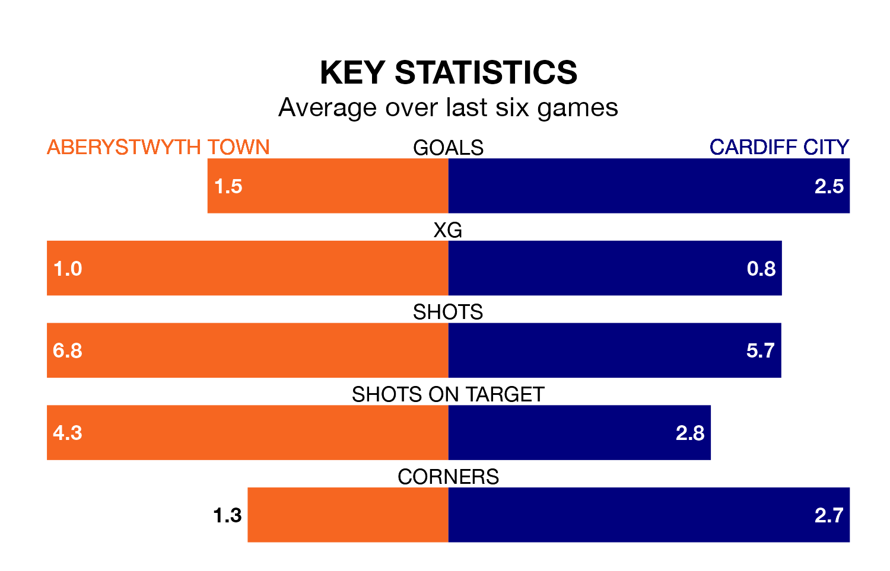

Relegation candidates Aberystwyth Town face a challenge against high-flying Cardiff City on Sunday.
Aberystwyth Town are fifth in the Welsh Premier Women's League table, and have picked up four wins and five draws in their 15 games to date.
Cardiff, meanwhile, are top of the standings with 40 points, having won 13 and drawn one of their first 16 matches.
With 50 goals in 16 games so far this season, Cardiff are the league's highest scorers with 3.1 goals per game. And they are conceding fewer than average, letting in nine goals at a rate of 0.6 per game.
Aberystwyth, meanwhile, are below average scorers, with 1.4 goals per game, compared to a league average of 1.8. They have conceded 1.7 goals per game.
In the last 10 years, Aberystwyth and Cardiff have played each other on 11 occasions. Cardiff won 10 of them and they drew once.
On average, Aberystwyth scored 0.2 goals and Cardiff 2.5 in those matches.
Their last meeting was on March 10, when Cardiff won 3-0 at home.
Town are in disappointing form in the Welsh Premier Women's League, with one win and three draws from their last six games.
With four wins and two losses over that period, City's form is much better – they have taken 12 points from 18, compared to the home team's six.
Aberystwyth's last match was on March 10, a 3-0 loss against Cardiff City.
Cardiff beat Wrexham Women 6-1 last time out, on March 17.
Updated: 10:19 (UTC), 22/03/24